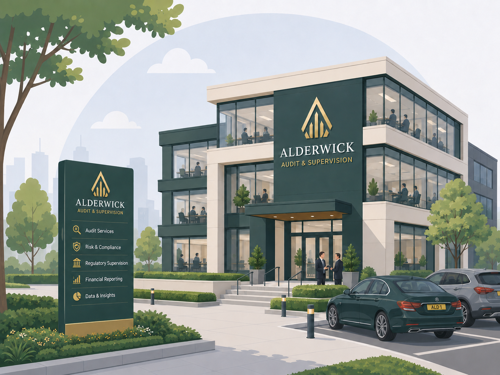
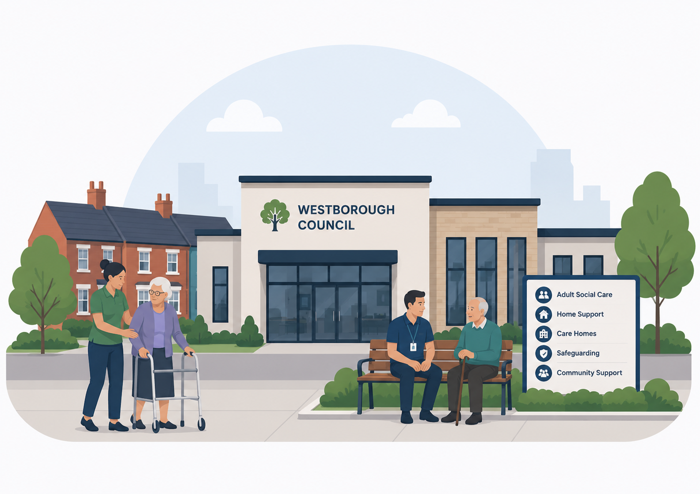
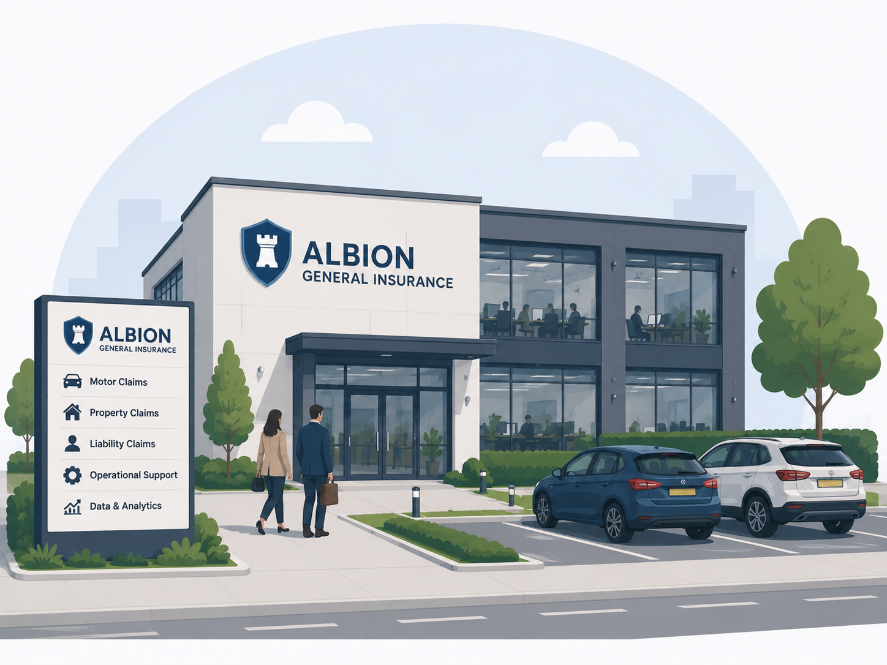

Understand
Clarify project goals, target audiences, constraints, and success metrics to guide decision-making.
I use data to help organisations improve performance, identify opportunities and risks, predict future outcomes and make better decisions.
I’m proficient in Excel, SQL, Power BI and Python, using them to clean, transform and model complex data, automate repeatable reporting, build clear dashboards and communicate findings effectively. I’m comfortable delivering end-to-end analytical projects—from defining the problem and validating the data to analysis, prediction, visualisation and practical recommendations.
I’m drawn to problems where the numbers affect people’s lives—health access, energy use, housing and education outcomes.
Clarify project goals, target audiences, constraints, and success metrics to guide decision-making.
Rigorously test data and evaluate competing explanations to pinpoint true root causes.
Analyze historical trends and variables to forecast outcomes and help leaders prepare.
Translate evidence into practical actions, clear priorities, and realistic trade-offs within constraints.
Establish success metrics and track results to ensure actions deliver intended outcomes.
Each case study connects a real-world analytical challenge to a clear decision, a defensible method and an actionable result.

Optimized limited inspection resources by analyzing risk signals across 960 audits. Successfully targeted 38 high-risk files and three specific firms for expert review.
View case studyEvaluated repair contractors to test for workload bias. Proved management fairly ranked contractors, but I exposed one consistently weak contractor and a separate four-month service decline.
View case studyInvestigated suspected network-wide supplier issues. Analyzed supply chain data to prove overall network stability while isolating the exact logistics failures causing shortages and costly emergency deliveries.
View case study
To explain an £8.25m social-care spending increase, I separated demand, price and service-use effects. Higher caseload drove most spending; fees and care hours were the clearest controllable pressures.
View case studyAnalyzed flight data to separate systemic punctuality decline from short-term disruptions. Traced a spike in cancellations directly to a single aircraft grounding rather than a broader network failure.
View case study
Investigated a £3.13m rise in claims costs by breaking down volume, mix, and unit cost. Proved claim volume drove 94.7% of the increase, refocusing management action directly on capacity and rework issues.
View case studyCombining PhD-level analytical workflow with hands-on digital product development. Backed by five years of advanced research and public-facing fieldwork, with a proven ability to transform messy, incomplete, and complex human-centered data into clear, strategic insights.
Having concluded my doctoral research, I am actively seeking my next role. I am focused on applying practical Data & AI capabilities to solve real-world problems through business-focused analysis, automation, and digital product development.
A concise view of my education and experience.
Used Excel and GIS to analyse the relationship between rainfall variability and rice yields.
Used NVivo to systematically analyse newspaper texts and identify patterns across qualitative evidence.
Used R and Gephi to analyse networks within Twitter discourse around elections, combining quantitative and social-network approaches.
Worked as a Research Associate and Social Research Interviewer, collecting, organising and communicating evidence while working to research, data-quality and confidentiality standards.
Used Python and Gemini to clean, organise and analyse approximately 29,000 tweets examining skilled migrants’ aspirations in England, alongside in-depth qualitative research.
Developing practical capability across Excel, SQL, Power BI, Python, automation and AI, applying these skills to business-focused portfolio projects and digital products while transitioning into professional data analytics.
I’m happy to talk through any of these projects in more detail, or discuss where this kind of analysis, reporting or automation could be useful in your team.